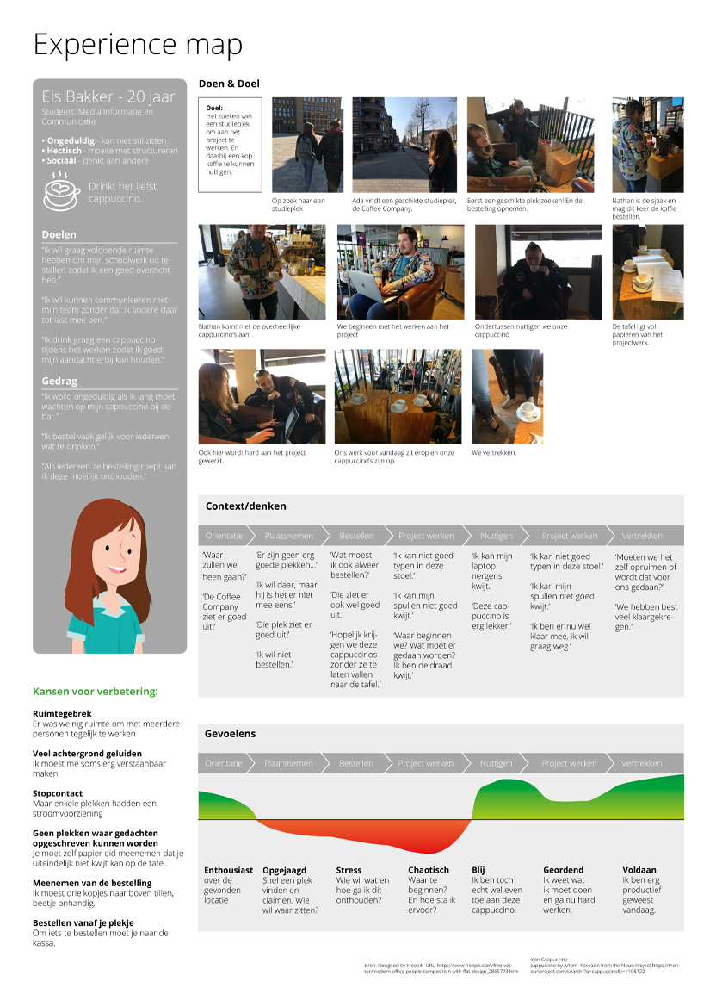
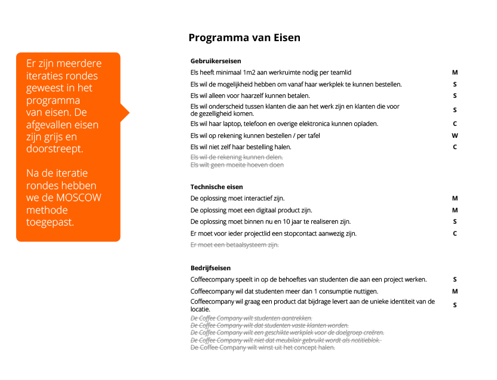
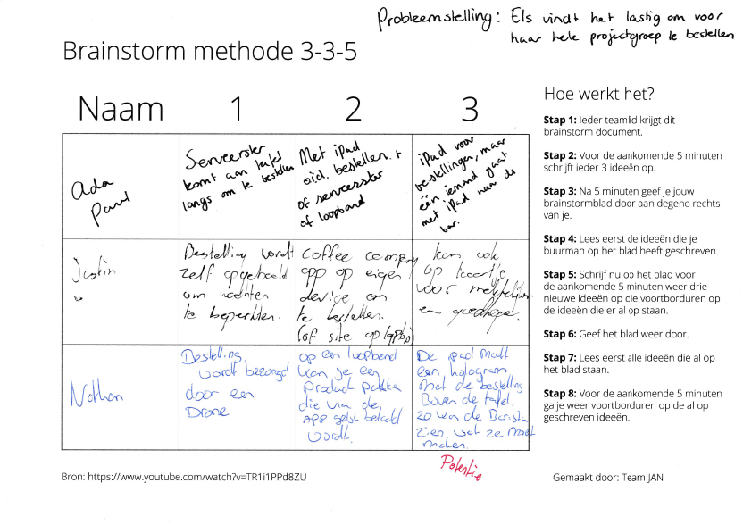
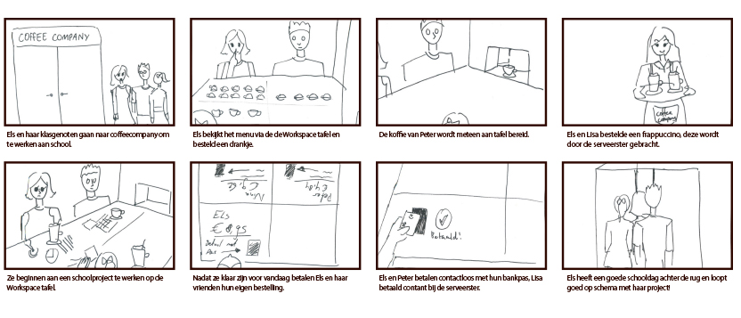
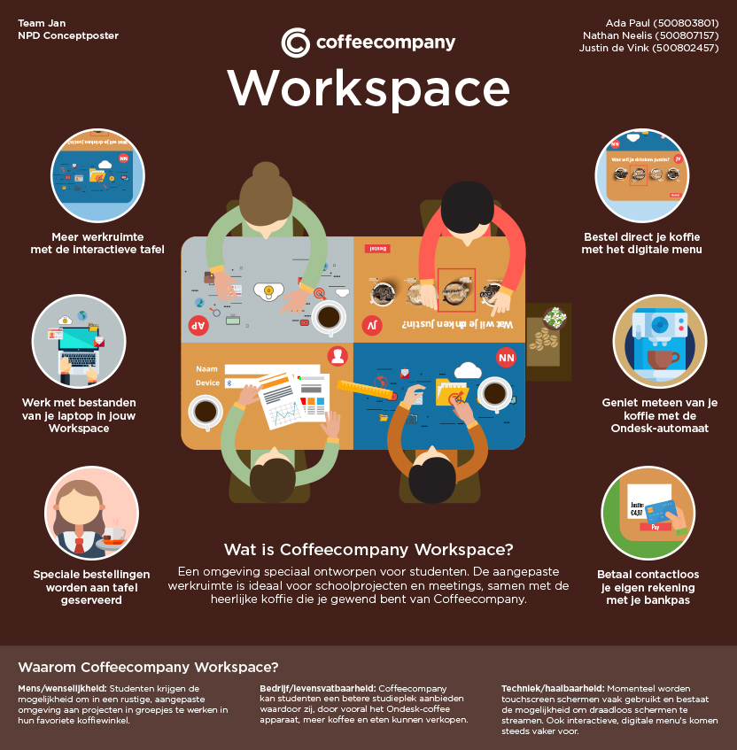

Het vak New Product Development (NPD) is een vervolg op User Centred Design (UCD). In de lessen hebben we een enorme hoeveelheid aan methode's geleerd om een user experience te ontwikkelen. Het proces is verdeeld in vier delen: Verkennen, Definiëren, Idee generatie en Conceptualiseren. Maar bij elk goed concept horen iteratie slagen en dit is het vijfde deel: Itereren.
Je kon kiezen uit verschillende design challenges en opdrachtgevers. Wij als team JAN kozen voor een design challenge waar we een concept gaan ontwikkelen dat studenten helpt om aan hun project te werken bij de Coffeecompany.
Verkennen
Tijdens de verkenningsfases hebben we een aantal methode's gebruikt om een uitgebreid beeld te krijgen van onze doelgroep en de ervaring. Zo begonnen we met het maken van een bloemassociatie om het begrip "projectwerk" te begrijpen. Ook hebben we een stakeholder map en empathy map gemaakt aan de hand van onze persona (van UCD - Els Bakker) en hebben we dit samengevat in een Experience map. In de experience map is goed te zien waar de gebruiker een negatieve ervaring heeft en waar de kansen liggen voor verbetering.

Definiëren
Tijdens deze fase zijn we Hoe Kun Je vragen gaan ontwikkelen om onze problemen in kleinere stappen straks te kunnen oplossen. In deze fase leggen we ook ons concept aan banden. Wat zijn de eisen van de gebruiker, de CoffeeCompany en welke technische eisen zijn er? We leggen deze antwoorden vast in ons Programma van Eisen. Dit is een lastig maar erg belangrijk punt in het proces. Ik denk dat hier ook nog een groot leerpunt voor mij ligt. Dit was de eerste keer dat ik deze, in teamverband, heb gemaakt maar ik blijf het zelfs tegen het einde van het project erg lastig vinden deze goed te formuleren.

Idee Generatie
Ons team is hier voor gemaakt. We denken altijd al vanaf het begin aan oplossingen wat natuurlijk uit den boze is. Maar in deze fase gaan we dan ook eindelijk los. Wel is het krijgen van ideeën dit keer aan de hand van methode's. Zo hebben we veel verschillende soorten brainstorm technieken en idee generatie methode's gedaan. We moesten in deze fase ook allemaal een brainstorm techniek opzoeken en deze na het zelf te hebben gedaan ook een ander team te laten doen. Ik koos hier voor de brainstorm methode 3-3-5. Bij deze methode heb je 5 minuten de tijd, om voor een HKJ, 3 verschillende oplossingen te bedenken. Vervolgens geef je deze oplossingen aan een teamlid en krijg je zijn HKJ met zijn 3 oplossingen. Je gaat nu aan de hand van zijn HKJ en oplossingen weer nieuwe ideeën verzinnen. Verder in deze fase zijn we alle ideeën gaan clusteren en combineren zodat we door de methode dot-voting nog 3 goede ideeën over hebben.

Conceptualiseren
Nu we de top 3 ideeën verzameld hebben gaan we met het Harris profiel de beste elementen uit elk idee halen en zo komen we uit op één goed idee waar we verder mee gaan. Nu gaan we met de morfologische kaart de touchpoints in kaart brengen. Dit zijn de punten waar de gebruiker in aanraking komt met het concept. En voor al die touchpoints gaan we bedenken welke techniek het best bij deze touchpoints passen. Nu we weten hoe het concept in elkaar zit laten we in een UXStoryboard zien hoe de touchpoints eruit zien in context.

Ons Concept
In onze verkenningsfase hebben we de conclusie getrokken dat de te kleine werkruimte, het bestellen van consumpties en het individueel betalen van de rekening de kansen zijn voor het verbeteren van experience. Na het stellen van eisen en het eindeloos door brainstormen op gave ideeën (we kregen er geen genoeg van) zijn we tot de conclusie gekomen dat Workspace de oplossing is.
Workspace is een omgeving speciaal ontworpen voor studenten. De aangepaste werkruimte is ideaal voor schoolprojecten en meetings, samen met de heerlijke koffie die je gewend bent van Coffeecompany.

Productbiografie
Ben je benieuwd naar het volledige proces? Lees de productbiografie!